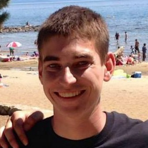

Goal
As proud members of team Wecodeinourunderpants we have all taken a vow to code seven days a week. We will not let rain, snow, power outages, Game of Thrones season premieres or the apocalypse get in the way of us writing a bunch of code. We are all passionate about what we do and plan on making some awesome websites and enterprise applications in CSE 136 and for the rest of our careers. We plan on going the extra distance and learning as much as possible. Yes, we will come to school 5 days a week dressed like normal students but on the weekends and late nights when things really need to get done Wecodeinourunderpants.
Members

Kyly G. Vass
- About
- Went to school originally for graphic design a long, long, time ago but never really finished. This time around of I am going all the way with computer science. I have worked as a contractor do some development for various companies over the past couple of years. Had a short internship with at Achieve Internet. Now I am working for Ingenue doing enterprise development for the first machine to machine nation wide network.
- Phone
- (702) 533-5959
- kvass@ucsd.edu

Sage August Moonbeam Hornung
- About
- Well I am in my final quarter as a UCSD student and it has been a great life experience. I enjoy surfing at our local beaches and hiking in many of Americas national parks in my free time. As far as CS I enjoy web technologies from design and front end to the backend and databases. I have some experience in IT and some day I hope to have a small but profitable company. I have a wonderful wife and plan on living in San Diego for the rest of my life.
- Phone
- (760) 123 - 1234
- shornung@ucsd.edu

Braxton Darius-Tyler Fitts
- About
- I've been interested in computers and technology almost my whole life. At first I was jumping around between being either an electronics engineer, a computer engineer, or a software engineer because I was fascinated by both the metal and the code behind it. Now I'm doing my last quarter as a CS major and striving to become a software engineer in the future.
- Phone
- (661) 808-6435
- bfitts@ucsd.edu
Kevin Yang
- About
- Graduating this quarter. I'm unsure about my future, but I do want to end up slaving away as a game dev. Also I haven't taken a picture in forever.
- Phone
- (909)718-9389
- key006@ucsd.edu

Mike Griffin
- About
- In my final quarter at UCSD. Have always had a passion for technology and innovation. Have interned as a Test Automation Engineer at Workday. Will be going back to Workday full time after I graduate and am currently planning to have a career that eventually results in leading a QA or Test Automation team and department.
- Phone
- (925)667-7261
- mjgriffi@ucsd.edu
Kyly G. Vass
- About
- I grew up in Little Rock, Arkansas had always hoped to go to a school on the west coast. With one year left after this quarter, I'm hoping to make the best of what the CSE department has to offer and come out of UCSD with the skills to go into many different fields.
- Phone
- (501) 413-9826
- adharams@ucsd.edu